10 Solutions et électrolytes
- Définir les termes solution, soluté et solvant.
- Identifier si un mélange donné est une solution.
- Définir les conditions d’une solution saturée, insaturée et sursaturée.
- Identifier et décrire les facteurs qui influencent la solubilité d’une substance.
- Définir les notions de solubilité et de saturation, et de quoi elles dépendent.
- Prédire si une molécule est soluble et si elle forme une solution électrolyte.
- Donner l’équation de dissociation d’un sel.
- Définir la concentration, la molarité et le titre.
- Convertir une molarité en titre et vice-versa.
- Expliquer comment préparer une solution par dissolution ou par dilution.
10.1 Définitions
10.1.1 Les solutions
Solution
Une solution est un mélange homogène composé d’un solvant et d’un ou plusieurs solutés.
- Le soluté: composé le moins abondant d’une solution.
- Le solvant: composé le plus abondant d’une solution.
On dit que le soluté est dissous dans le solvant. La solution est translucide et laisse donc passer la lumière.
Par exemple, lorsque l’on mélange une cuillère de sucre dans un verre d’eau, les cristaux de sucre disparaissent parce qu’ils se dissolvent dans l’eau. Le sucre est le soluté et l’eau est le solvant. Une solution liquide dans laquelle le solvant est l’eau est appelée solution aqueuse.
Le soluté n’est pas forcément solide et le solvant n’est pas forcément liquide.
| soluté | solvant | exemple | état de la solution |
|---|---|---|---|
| gaz | gaz | air (oxygène et azote) | gaz |
| liquide | gaz | vapeur d’eau dans l’air | gaz |
| solide | gaz | neige carbonique dans l’air | gaz |
| gaz | liquide | boisson gazeuse (gaz carbonique et eau) | liquide |
| liquide | liquide | antigel (glycérol et eau) | liquide |
| solide | liquide | eau de mer (sels et eau) | liquide |
| gaz | solide | hydrogène dans le palladium | solide |
| liquide | solide | mercure dans l’or | solide |
| solide | solide | laiton (zinc et cuivre) | solide |
Répondez aux questions suivantes sur les solutions.
- Définissez les termes soluté et solvant.
- Dans une solution de sel dans l’eau, lequel est le soluté ? Lequel est le solvant ?
- Parmi les mélanges suivants, lesquels sont des solutions ? l’eau salée, l’eau boueuse, l’air, l’eau gazeuse, l’huile dans l’eau.
- Le soluté est le composé le moins abondant, dissous dans le solvant ; le solvant est le composé le plus abondant.
- Le sel est le soluté, l’eau est le solvant.
- Sont des solutions (mélanges homogènes) : l’eau salée, l’air et l’eau gazeuse. Ne sont pas des solutions : l’eau boueuse et l’huile dans l’eau (mélanges hétérogènes).
10.1.2 La dissolution
Dissolution
La dissolution est le processus par lequel un soluté forme une solution dans un solvant.
Lorsqu’un soluté est capable de se dissoudre dans un solvant, on dit qu’il est soluble. Lors de la dissolution, les ions ou les molécules de soluté se répartissent uniformément dans toute la solution et ne décantent pas avec le temps.
Au contraire, lorsqu’un composé ne se dissout pas dans un solvant, on dit qu’il est insoluble. Les constituants d’un composé insoluble restent associés les uns aux autres et gardent leur état solide.
10.1.2.1 Dissolution moléculaire
Un grain de sucre (saccharose, C12H22O11) est un petit cristal formé de molécules dont toutes les liaisons internes sont des liaisons covalentes.
Lorsque ce cristal est placé dans l’eau, des ponts hydrogène se forment entre l’eau et les molécules de C12H22O11 ce qui affaibli les liaisons intermoléculaires et les molécules se détachent du cristal pour former la solution. Les liaisons moléculaires ne sont pas rompues et chaque molécule reste entière.
10.1.2.2 Dissolution ionique
Un grain de sel de cuisine (chlorure de sodium, NaCl) est un petit cristal formé de ions Na+ et Cl- liés par des liaisons ioniques. Lorsque ce cristal est placé dans l’eau, les liaisons ioniques sont rompues et les ions se retrouvent isolés dans la solution. Chaque ion est entouré de molécules d’eau. On dit qu’il est hydraté.
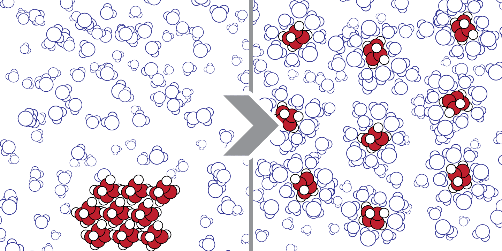
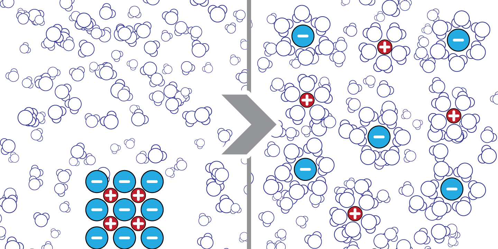
10.1.2.3 Les facteurs influençant la dissolution
- la quantité de soluté par rapport à la quantité de solvant,
- la nature du soluté (qui se ressemble se dissout),
- la nature du solvant (qui se ressemble se dissout),
- la température.
On rappelle la règle « qui se ressemble se dissout » : un soluté polaire (ou ionique) se dissout dans un solvant polaire, un soluté non polaire dans un solvant non polaire.
- Citez les facteurs qui influencent la dissolution d’un soluté.
- Le sel (NaCl, ionique) et l’huile (non polaire) : lequel se dissout dans l’eau (solvant polaire) ? Justifiez.
- En général, comment la solubilité d’un solide dans l’eau varie-t-elle avec la température ?
- La quantité de soluté par rapport au solvant, la nature du soluté, la nature du solvant et la température.
- Le sel se dissout dans l’eau : NaCl est ionique et l’eau est polaire, « qui se ressemble se dissout ». L’huile, non polaire, ne se dissout pas dans l’eau polaire.
- En général, la solubilité d’un solide augmente avec la température.
10.1.3 La solubilité et la saturation
A une température donnée, il existe une limite à la quantité de soluté qui peut se dissoudre dans une quantité de solvant. Cette limite est appelée solubilité. Une fois cette limite atteinte, la solution est appelée solution saturée, en dessous de cette limite, c’est une solution non saturée.
La solubilité
La solubilité d’un composé est la quantité maximale de soluté qui peut être dissous dans un solvant à une température donnée.
- Question : Quelle est la solubilité de \(\ce{NaCl}\) ?
- Réponse : La solubilité de \(\ce{NaCl}\) est de 36 g pour 100 mL à 25°C.
Cela veut dire que l’on peut dissoudre au maximum 36 grammes de NaCl dans 100 mL d’eau à 25°C. Une fois cette limite atteinte, si l’on ajoute du NaCl à la solution, il ne se dissoudra pas. La solution est saturée.
Sous certaines conditions, la limite de solubilité peut être dépassée et plus de soluté peut être dissous. Une telle solution sera appelée solution sursaturée. Les solutions sursaturées ne sont pas stables. L’ajout d’un germe cristallin, un petit cristal de soluté, entraînera la cristallisation de l’excès de soluté.
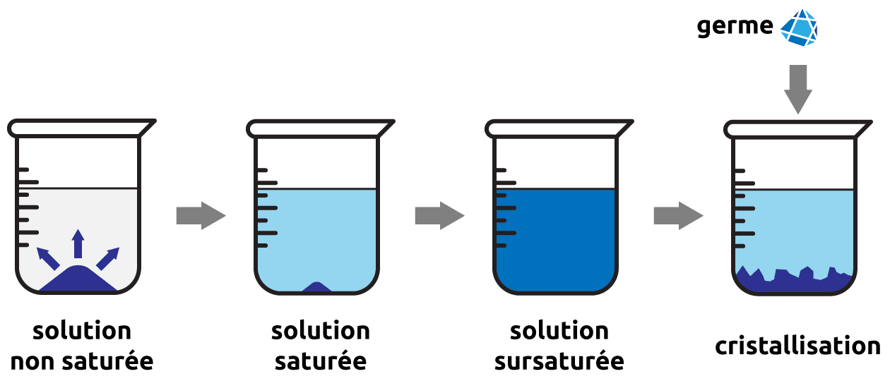
La solubilité du chlorure de sodium est de 36 g pour 100 mL d’eau à 25°C.
- Que signifie « solution saturée » ? « non saturée » ? « sursaturée » ?
- On dissout 20 g de NaCl dans 100 mL d’eau à 25°C. La solution est-elle saturée, non saturée ou sursaturée ?
- On dissout 36 g de NaCl dans 100 mL d’eau à 25°C, puis on ajoute encore 5 g de NaCl. Que se passe-t-il ?
- De quoi dépend la solubilité d’un composé ?
- Une solution saturée contient la quantité maximale de soluté dissous ; une solution non saturée en contient moins que ce maximum ; une solution sursaturée en contient plus que le maximum (état instable).
- Non saturée : 20 g est inférieur à la limite de solubilité (36 g).
- Les 36 g se dissolvent (la solution est saturée) ; les 5 g supplémentaires ne se dissolvent pas et restent solides au fond du récipient.
- La solubilité dépend de la nature du soluté et du solvant (« qui se ressemble se dissout ») et de la température.
10.1.4 La cristallisation
Cristallisation
La cristallisation est le processus par lequel un soluté forme un solide cristallin à partir d’une solution.
La cristallisation est le phénomène inverse de la dissolution. Le soluté se sépare de la solution et redevient solide. Les particules de soluté occupent des emplacements définis et de manière périodique sur une grande portion de l’espace. Ils forment des cristaux.
Si la cristallisation a lieu lentement :
La croissance des cristaux est régulière. Les cristaux sont de grande taille et de pureté élevée.
Si la cristallisation a lieu rapidement :
La croissance des cristaux est irrégulière. Les cristaux sont de petite taille. Ils forment une poudre finement divisée que l’on appelle précipité. La précipitation est souvent le résultat d’une réaction chimique et se produit instantanément.
La recristallisation est une méthode de séparation utilisée en chimie. En dissolvant un mélange dans un solvant approprié, on peut récupérer le soluté désiré en le faisant cristalliser lentement. Le composé formera des cristaux purs, laissant les impuretés indésirables en solution.
10.2 Dissociation ionique
Lorsqu’un composé ionique est plongé dans l’eau, les molécules d’eau, polaires, orientent leurs pôles négatifs vers les cations, et leurs pôles positifs vers les anions. La dissociation ionique est également appelée dissociation électrolytique.
L’eau diminue drastiquement l’attraction entre anions et cations. Les molécules d’eau qui entourent les ions écartent ces derniers les uns des autres. Le cristal s’effondre et les ions, indépendants les uns des autres, sont dispersés dans la solution.
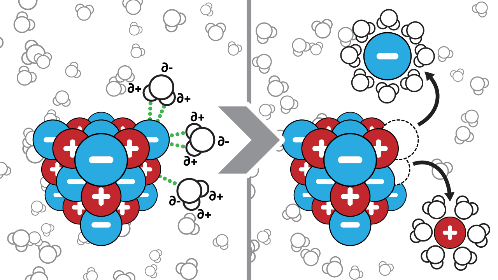
Une solution est électriquement neutre : le nombre de charges positives est égal au nombre de charges négatives.
10.2.1 Équations de dissociation
Par convention, la dissociation dans l’eau d’un composé ionique \(C_nA_m\) s’écrit :
\[ \ce{C_{n}A_{m} ->C[H2O] n C^{m+} + m A^{n-}} \]
Par exemple: \[ \begin{split} & \ce{NaCl ->C[H2O] Na^{+} + Cl^{-} } \\ & \ce{K2CO3 ->C[H2O] 2 K^{+} + CO3^{2-} } \end{split} \qquad \begin{split} \ce{Al2(SO4)3 ->C[H2O] 2 Al^{3+} + 3 SO_{4}^{2-} } \\ \ce{AgCl ->C[H2O] AgCl v } \\ {\scriptsize \text{(AgCl n'est pas soluble dans l'eau)}} \end{split} \]
- On écrit la formule brute du soluté.
- On dessine une flèche avec, au dessus, la formule brute du solvant. La flèche va dans le sens de la dissociation.
- On écrit la formule brute des ions libérés avec leur quantité.
Pour déterminer si un composé est soluble ou non, on se réfère à une table de solubilité. Cette table nous indique la solubilité de certains composés pour une température. Pour un composé non soluble, on ajoutera une flèche vers le bas à côté du composé dans l’équation de dissociation.
Si ils sont solubles, écrire les équations de dissociation des composés suivants :
\(KNO_3\)
\(Na_2SO_4\)
\(BaCO_3\)
\(H_3PO_4\)
\(\ce{KNO3 ->C[H2O] K^{+} + NO3^{-} }\)
\(\ce{Na2SO4 ->C[H2O] 2 Na^{+} + SO4^{2-} }\)
\(\ce{BaCO3 ->C[H2O] BaCO3 v }\)
\(\ce{H3PO4 ->C[H2O] 3 H^{+} + PO4^{3-} }\)
A noter:
- Les acides sont solubles dans l’eau et se dissocient (au moins partiellement).
- La solubilité des sels et des hydroxydes est indiquée par la table de solubilité.
- Les oxydes ne sont pas solubles dans l’eau mais réagissent avec elle.
10.2.2 Électrolyte
Expérimentalement, on remarque qu’une solution d’eau pure ne conduit que très peu le courant électrique. Si l’on dissout du chlorure de sodium (NaCl) dans l’eau, la solution devient conductrice alors que si l’on dissout du sucre (saccharose), la conductivité de l’eau ne change pas.
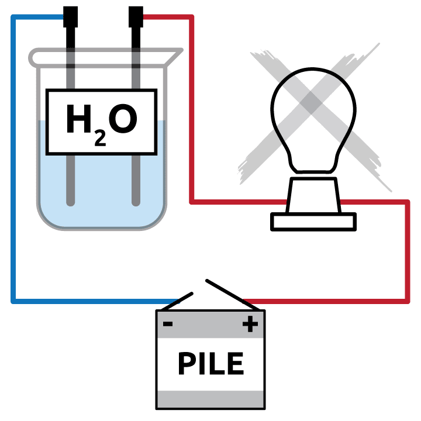
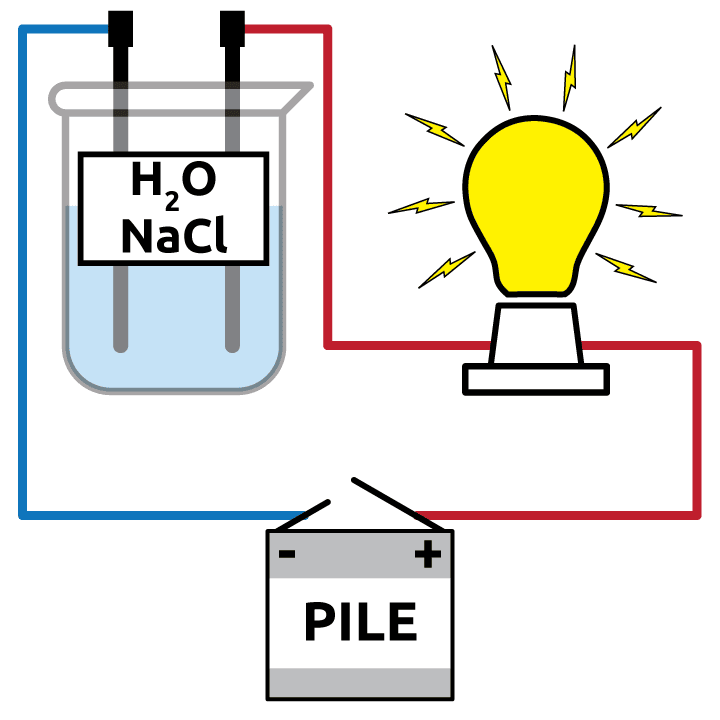
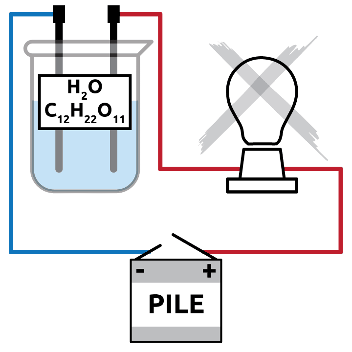
- L’eau n’est pas conductrice. La conductivité de l’eau provient des substances dissoutes dans l’eau, pas de l’eau elle-même.
- Les substances qui se dissolvent dans l’eau ne rendent pas toutes la solution conductrice.
Électrolyte
Un électrolyte est une substance qui se dissocie en ions en solution et forme une solution conductrice d’électricité.
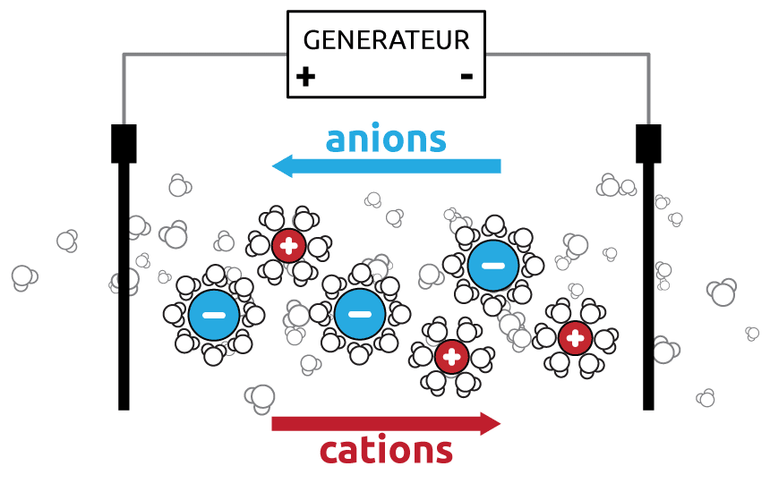
Lorsque l’on impose une tension aux bornes d’une solution ionique, les ions se mettent en mouvement. Parce que les ions portent une charge électrique d’une électrode à l’autre, on obtient un courant électrique appelé courant ionique. La solution ionique devient alors conductrice. Un tel composé est appelé électrolyte.
A l’inverse, une solution sucrée ne conduit pas l’électricité car le saccharose reste sous la forme de molécule neutre et ne se dissocie pas. Le saccharose n’est donc pas un électrolyte.
Le courant électrique dans la solution est dû au déplacement des cations dans un sens et au déplacement des anions dans le sens contraire. C’est un déplacement de charges et non un déplacement d’électrons seuls.
Indiquez si les composés suivants sont des électrolytes ou non électrolytes :
| composé | justification | |||
|---|---|---|---|---|
| 1 | \(Ca(NO_3)_2\) | oui | non | |
| 2 | \(H_2SO_4\) | oui | non | |
| 3 | \(CaCO_3\) | oui | non | |
| 4 | \(HF\) | oui | non | |
| 5 | \(NaOH\) | oui | non | |
| 6 | \(C_6H_{12}O_6\) (glucose) | oui | non |
\(Ca(NO_3)_2\) : oui \(\rightarrow\) composé ionique dissocié
\(H_2SO_4\) : oui \(\rightarrow\) acide soluble
\(CaCO_3\) : non \(\rightarrow\) insoluble
\(HF\) : oui \(\rightarrow\) acide soluble
\(NaOH\) : oui \(\rightarrow\) composé ionique dissocié
\(C_6H_{12}O_6\) (glucose) : non \(\rightarrow\) molécules non dissociées
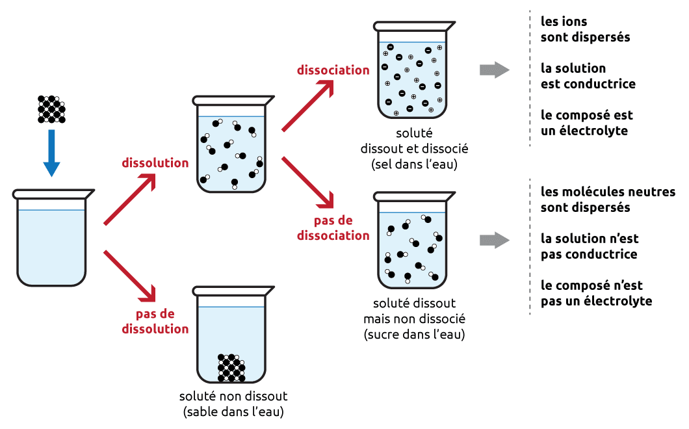
10.3 La concentration
En chimie, la plupart des réactions ont lieu en solution. Il est donc important de connaître les quantités de réactifs (solutés) que l’on fait réagir. Pour connaître ces quantités, le chimiste utilise la concentration.
Concentration
La concentration d’une solution est le rapport entre la quantité de soluté et la quantité totale d’une solution.
La composition d’une solution est toujours donnée par une grandeur intensive, c’est-à-dire qu’elle ne dépend ni du volume, ni de la masse, ni de la quantité de matière de l’échantillon.
La concentration d’une solution peut être définie de différentes manières (concentration molaire, concentration massique, fraction molaire, pourcentage massique, pourcentages volumiques, …). Nous en décrirons deux, la molarité et le titre.
10.3.1 La molarité (concentration molaire)
La concentration molaire (ou molarité) d’un soluté est le nombre de moles de soluté par unité de volume de solution.
\[ \begin{split} C = \frac{n}{V} \end{split} \qquad \begin{split} n &\text{ : Nombre de moles de soluté en mol} \\ V &\text{ : Volume de solution en l} \\ C &\text{ : Concentration du soluté en mol/L ou M} \end{split} \]
En chimie, la concentration molaire d’une espèce A est notée entre deux barres verticales, |A|. Par exemple, une concentration en acide sulfurique (H2SO4) de 0.5 mol/L sera notée:
\[ |H_2SO_4| = 0.5\ M \text{ ou } \text{ mol/L} \]
Calculez la molarité des solutions suivantes :
- 1.2 g d’hydroxyde de sodium dans 25 mL de solution
- 3.43 g d’hydroxyde de barium dans 2.5 L de solution
- 1.47 g d’acide phosphorique dans 40 mL de solution
- \[ \begin{split} n_{NaOH} &= \frac{m_{NaOH}}{M_{NaOH}} \\ &= \frac{1.2\ \text{ g}}{40.008\ \text{ g/mol}} \\ &= 3 \cdot 10^{-2}\ \text{ mol} \end{split} \qquad \begin{split} C_{NaOH} &= \frac{n_{NaOH}}{V_{sol}} \\ &= \frac{3 \cdot 10^{-2}\ \text{ mol}}{25 \cdot 10^{-3}\ \text{ L}} \\ &= 1.2\ \text{ mol/L} \text{ ou } M \end{split} \]
- \[ \begin{split} n_{Ba(OH)_2} &= \frac{m_{Ba(OH)_2}}{M_{Ba(OH)_2}} \\ &= \frac{3.43\ \text{ g}}{171.316\ \text{ g/mol}} \\ &= 2 \cdot 10^{-2}\ \text{ mol} \end{split} \qquad \begin{split} C_{Ba(OH)_2} &= \frac{n_{Ba(OH)_2}}{V_{sol}} \\ &= \frac{2 \cdot 10^{-2}\ \text{ mol}}{2.5\ \text{ L}} \\ &= 8 \cdot 10^{-3}\ \text{ mol/L} \text{ ou } M \end{split} \]
- \[ \begin{split} n_{H_3PO_4} &= \frac{m_{H_3PO_4}}{M_{H_3PO_4}} \\ &= \frac{1.47\ \text{ g}}{97.994\ \text{ g/mol}} \\ &= 1.5 \cdot 10^{-2}\ \text{ mol} \end{split} \qquad \begin{split} C_{H_3PO_4} &= \frac{n_{H_3PO_4}}{V_{sol}} \\ &= \frac{1.5 \cdot 10^{-2}\ \text{ mol}}{40 \cdot 10^{-3}\ \text{ L}} \\ &= 0.375\ \text{ mol/L} \text{ ou } M \end{split} \]
10.3.2 Le titre (concentration massique)
La concentration massique (ou titre) d’un soluté est la masse de soluté par unité de volume de solution.
\[ \begin{split} T = \frac{m}{V} \end{split} \qquad \begin{split} m &\text{ : Masse de soluté en g} \\ V &\text{ : Volume de solution en L} \\ T &\text{ : Titre du soluté en g/L} \end{split} \]
Puisque \(n = \frac{m}{M}\), alors
\[ \begin{split} T = C \cdot M \end{split} \qquad \begin{split} T &\text{ : Titre du soluté en g/L} \\ C &\text{ : Concentration de la solution en mol/L} \\ M &\text{ : Masse molaire du soluté g/mol} \end{split} \]
10.3.3 Préparation des solutions
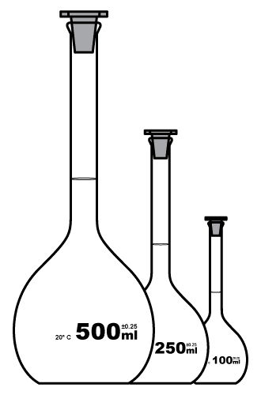
Beaucoup des réactifs utilisés en chimie sont sous forme de solution. Ces solutions doivent être achetées ou préparées. Pour de nombreuses applications, la concentration de la solution et sa méthode de préparation doivent être aussi précises que possible.
Les béchers ou erlenmeyers gradués ne sont pas utilisés pour la préparation de solutions précises. Les indications de volume sur ces instruments sont plus décoratives que quantitatives. On utilisera une fiole jaugée (ou ballon jaugé) pour préparer une solution.
Une fiole jaugée est un ballon en verre à fond plat avec un col étroit. Le col présente une ligne de calibration unique indiquant un volume précis pour une température donnée.
Les ballons jaugés sont fabriqués dans des tailles différentes pouvant contenir différents volumes (25 ml, 50 ml, 100 ml, …).
Pour préparer une solution en laboratoire, généralement, le volume et la concentration de la solution sont donnés.
10.3.3.1 Préparation par dissolution
On peut préparer une solution par dissolution, c’est-à-dire en dissolvant le soluté dans le solvant. Les étapes sont les suivantes:
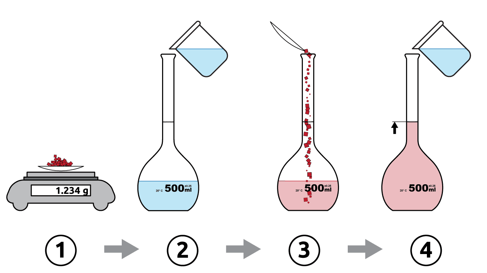
- Peser le soluté.
- Remplir la fiole jaugée à moitié avec de l’eau distillée.
- Transférer le soluté dans la fiole et dissoudre.
- Compléter jusqu’au trait de jauge avec de l’eau distillée.
10.3.3.2 Préparation par dilution
Les solutions utilisées en laboratoire sont souvent achetées ou préparées sous forme de solutions concentrées (appelées solutions stock). A partir de ces solutions, on peut obtenir des solutions de concentrations plus faibles en ajoutant du solvant. Ce procédé est appelé dilution.
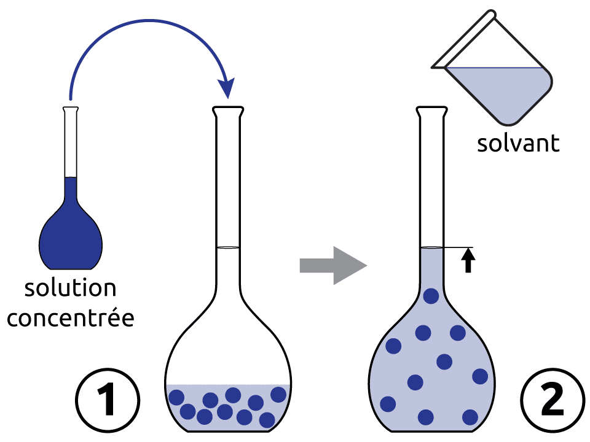
Lors d’une dilution, le volume de solution augmente mais la quantité de soluté reste la même. On peut généraliser le calcul lors de la dissolution d’une solution par la relation suivante :
\[ \begin{split} C_i \cdot V_i = C_f \cdot V_f \end{split} \qquad \begin{split} & \text{avec} \\ C_i & \text{: concentration initiale} \\ V_i & \text{: volume initial} \\ C_f & \text{: concentration finale} \\ V_f & \text{: volume final} \end{split} \]
A quel volume doit-on diluer 50 mL de H2SO4 3.5 M pour obtenir une solution de H2SO4 2 M?
\[ \begin{split} C_i \cdot V_i = C_f \cdot V_f \end{split} \qquad \begin{split} V_f &= \frac{C_i \cdot V_i}{C_f} \\ &= \frac{3.5\ M \cdot 50 \cdot 10^{-3}\ \text{ L} }{2\ M} \\ &= 0.0875\ \text{ L} = 87.5\ mL \end{split} \]
10.4 Résumé
- Une solution est un mélange homogène d’un solvant et d’un ou plusieurs solutés. Une solution aqueuse a l’eau pour solvant.
- La dissolution peut être moléculaire ou ionique.
- La solubilité est la quantité maximale de soluté qui se dissout dans un solvant à une température donnée. Elle dépend de la nature du soluté et du solvant et de la température.
- Une solution est non saturée, saturée ou sursaturée. La cristallisation est l’inverse de la dissolution.
- Un électrolyte est une substance qui se dissocie en ions en solution et rend la solution conductrice. Les composés ioniques solubles et les acides sont des électrolytes ; les molécules qui ne se dissocient pas ne le sont pas.
- L’équation de dissociation d’un composé ionique soluble s’écrit \(\ce{C_nA_m ->C[H2O] n\,C^{m+} + m\,A^{n-}}\) ; un composé insoluble est noté avec une flèche vers le bas.
- La molarité : \(C = \dfrac{n}{V}\) en mol/L (ou M), notée \(|A|\). Le titre : \(T = \dfrac{m}{V}\) en g/L. On passe de l’un à l’autre par \(T = C \cdot M\).
- On prépare une solution par dissolution ou par dilution d’une solution stock.
10.5 Exercices supplémentaires
Si ils sont solubles, écrire les équations de dissociation des composés suivants :
\(\ce{KBr}\)
\(\ce{AgNO3}\)
\(\ce{MgCO3}\)
\(\ce{AgOH}\)
\(\ce{Ba(OH)2}\)
\(\ce{HCl}\)
\(\ce{AlPO4}\)
\(\ce{Fe2(SO4)3}\)
\(\ce{(NH4)3PO4}\)
\(\ce{Cu(NO3)2}\)
\(\ce{K2SO4}\)
\(\ce{H3PO4}\)
\(\ce{KBr ->C[H2O] K^{+} + Br^{-} }\)
\(\ce{AgNO3 ->C[H2O] Ag^{+} + NO3^{-} }\)
\(\ce{MgCO3 ->C[H2O] MgCO3 v }\)
\(\ce{AgOH ->C[H2O] AgOH v }\)
\(\ce{Ba(OH)2 ->C[H2O] Ba^{2+} + 2OH^{-} }\)
\(\ce{HCl ->C[H2O] H^{+} + Cl^{-}}\)
\(\ce{AlPO4 ->C[H2O] AlPO4 v }\)
\(\ce{Fe2(SO4)3 ->C[H2O] 2Fe^{3+} + 3SO4^{2-} }\)
\(\ce{(NH4)3PO4 ->C[H2O] 3NH4^{+} + PO4^{3-} }\)
\(\ce{Cu(NO3)2 ->C[H2O] Cu^{2+} + 2NO3^{-} }\)
\(\ce{K2SO4 ->C[H2O] 2K^{+} + SO4^{2-} }\)
\(\ce{H3PO4 ->C[H2O] 3H^{+} + PO4^{3-} }\)
On prépare deux solutions de 100 mL chacune, par dissolution de :
- 0.111 g de chlorure de calcium,
- 58.5 mg de sulfate de fer (III).
Calculer pour chacune d’elles, la concentration molaire du sel et celle des ions qui constituent le sel.
- \[ \begin{split} M_{\ce{CaCl2}} &= 110.98\ \text{ g/mol} \\[2em] \Rightarrow n_{\ce{CaCl2}} &= \frac{m_{\ce{CaCl2}}}{M_{\ce{CaCl2}}} = \frac{0.111\ \text{ g}}{110.98\ \text{ g/mol}} = 10^{-3}\ \text{ mol} \\[2em] |\ce{CaCl2}| &= \frac{n_{\ce{CaCl2}}}{V_{sol}} = \frac{10^{-3}\ \text{ mol}}{10^{-1}\ \text{ L}} = 10^{-2}\ M \end{split} \qquad \begin{split} \ce{CaCl2} & \ce{->} \ce{Ca}^{2+} + 2\ \ce{Cl}^- \\[2em] |\ce{Ca}^{2+}| &= |\ce{CaCl2}| = 10^{-2}\ M \\[1em] |\ce{Cl}^-| &= 2 \cdot |\ce{CaCl2}| = 2 \cdot 10^{-2}\ M \\ \end{split} \]
- \[ \begin{split} M_{\ce{Fe2(SO4)3}} &= 399.88\ \text{ g/mol} \\[2em] \Rightarrow n_{\ce{Fe2(SO4)3}} &= \frac{m_{\ce{Fe2(SO4)3}}}{M_{\ce{Fe2(SO4)3}}} \\ &= \frac{58.5 \cdot 10^{-3}\ \text{ g}}{399.88\ \text{ g/mol}} = 1.463 \cdot 10^{-4}\ \text{ mol} \\[2em] |\ce{Fe2(SO4)3}| &= \frac{n_{\ce{Fe2(SO4)3}}}{V_{sol}}\\ &= \frac{1.463 \cdot 10^{-4}\ \text{ mol}}{10^{-1}\ \text{ L}} = 1.463 \cdot 10^{-3}\ M \end{split} \qquad \begin{split} \ce{Fe2(SO4)3} & \ce{->} 2\ \ce{Fe}^{3+} + 3\ \ce{SO4}^{2-} \\[2em] |\ce{Fe}^{3+}| &= 2 \cdot |\ce{Fe2(SO4)3}|\\ &= 2.926 \cdot 10^{-3}\ M \\[1em] |\ce{SO4}^{2-}| &= 3 \cdot |\ce{Fe2(SO4)3}|\\ &= 4.389 \cdot 10^{-3}\ M \\ \end{split} \]
- En supposant une dissociation complète, calculez le nombre de moles de cations et d’anions contenus dans chacune des solutions suivantes :
- 20 mL de NaCl 0.1 M
- 30 mL de CaCl2 0.3 M
- 50 mL de Al2(SO4)3 0.2 M
- On mélange les 3 échantillons. Calculez la molarité de chaque ion dans la solution finale.
- \[ \begin{split} NaCl &\ce{->} Na^+ + Cl^- \\ n_{Na^+} &= C_{NaCl} \cdot V_{NaCl} = 0.1\ M \cdot 20 \cdot 10^{-3}\ \text{ L} \\ &= 0.002\ \text{ mol} \\ n_{Cl^-} &= n_{Na^+} = 0.002\ \text{ mol} \end{split} \]
- \[ \begin{split} CaCl_2 &\ce{->} Ca^{2+} + 2\ Cl^- \\ n_{Ca^{2+}} &= C_{CaCl_2} \cdot V_{CaCl_2} = 0.3\ M \cdot 30 \cdot 10^{-3}\ \text{ L} \\ &= 0.009\ \text{ mol} \\ n_{Cl^-} &= 2 \cdot n_{Ca^{2+}} = 0.018\ \text{ mol} \end{split} \]
- \[ \begin{split} Al_2(SO_4)_3 &\ce{->} 2\ Al^{3+} + 3\ SO_4^{2-} \\ n_{Al^{3+}} &= 2 \cdot C_{Al_2(SO_4)_3} \cdot V_{Al_2(SO_4)_3} = 2 \cdot 0.2\ M \cdot 50 \cdot 10^{-3}\ \text{ L} \\ &= 0.02\ \text{ mol} \\ n_{SO_4^{2-}} &= 3 \cdot C_{Al_2(SO_4)_3} \cdot V_{Al_2(SO_4)_3} = 3 \cdot 0.2\ M \cdot 50 \cdot 10^{-3}\ \text{ L} \\ &= 0.03\ \text{ mol} \end{split} \]
- \[ \begin{split} V_{final} &= 20\ mL + 30\ mL + 50\ mL = 100\ mL = 0.1\ \text{ L} \\ |Na^+| &= \frac{0.002\ \text{ mol}}{0.1\ \text{ L}} = 0.02\ M \\ |Cl^-| &= \frac{0.002\ \text{ mol} + 0.018\ \text{ mol}}{0.1\ \text{ L}} = 0.2\ M \\ |Ca^{2+}| &= \frac{0.009\ \text{ mol}}{0.1\ \text{ L}} = 0.09\ M \\ |Al^{3+}| &= \frac{0.02\ \text{ mol}}{0.1\ \text{ L}} = 0.2\ M \\ |SO_4^{2-}| &= \frac{0.03\ \text{ mol}}{0.1\ \text{ L}} = 0.3\ M \\ \end{split} \]
Calculer le titre et la molarité des solutions suivantes:
- 1.2 g d’hydroxyde de sodium dans 25 mL de solution
- 3.43 g d’hydroxyde de barium dans 2.5 L de solution
- 1.47 g d’acide phosphorique dans 40 mL de solution
- \[ \begin{split} T_{NaOH} &= \frac{m_{NaOH}}{V_{sol}} = \frac{1.2\ \text{ g}}{25 \cdot 10^{-3}\ \text{ L}} \\ &= 48\ \text{g/L} \\ n_{NaOH} &= \frac{m_{NaOH}}{M_{NaOH}} = \frac{1.2\ \text{ g}}{40.008\ \text{ g/mol}} \\ &= 3 \cdot 10^{-2}\ \text{ mol} \\ C_{NaOH} &= \frac{n_{NaOH}}{V_{sol}} = \frac{3 \cdot 10^{-2}\ \text{ mol}}{25 \cdot 10^{-3}\ \text{ L}} \\ &= 1.2\ M \end{split} \]
- \[ \begin{split} T_{Ba(OH)2} &= \frac{m_{Ba(OH)2}}{V_{sol}} = \frac{3.43\ \text{ g}}{2.5\ \text{ L}} \\ &= 1.372\ \text{g/L} \\ n_{Ba(OH)2} &= \frac{m_{Ba(OH)2}}{M_{Ba(OH)2}} = \frac{3.43\ \text{ g}}{171.316\ \text{ g/mol}} \\ &= 2 \cdot 10^{-2}\ \text{ mol} \\ C_{Ba(OH)2} &= \frac{n_{Ba(OH)2}}{V_{sol}} = \frac{2 \cdot 10^{-2}\ \text{ mol}}{2.5\ \text{ L}} \\ &= 8 \cdot 10^{-3}\ M \\ \end{split} \]
- \[ \begin{split} T_{H_3PO_4} &= \frac{m_{H_3PO_4}}{V_{sol}} = \frac{1.47\ \text{ g}}{40 \cdot 10^{-3}\ \text{ L}} \\ &= 36.75\ \text{g/L} \\ n_{H_3PO_4} &= \frac{m_{H_3PO_4}}{M_{H_3PO_4}} = \frac{1.47\ \text{ g}}{97.994\ \text{ g/mol}} \\ &= 1.5 \cdot 10^{-2}\ \text{ mol} \\ C_{H_3PO_4} &= \frac{n_{H_3PO_4}}{V_{sol}} = \frac{1.5 \cdot 10^{-2}\ \text{ mol}}{40 \cdot 10^{-3}\ \text{ L}} \\ &= 0.375\ M \\ \end{split} \]
- Quelle est la molarité d’une solution préparée par dissolution de 12.5 g de dans 350.0 mL d’eau ?
- Combien de grammes de soluté y a-t-il dans 1.50 L de NaOH 0.25 M ?
- Quelle est le titre d’une solution préparée par dissolution de 2.5 mol de dans 500.0 mL d’eau ?
- \[ \begin{split} M_{\ce{NaHCO3}} &= 84.018\ \text{ g/mol} \\ \Rightarrow n_{\ce{NaHCO3}} &= \frac{12.5\ \text{ g}}{84.018\ \text{ g/mol}} = 0.149\ \text{ mol} \end{split} \qquad \begin{split} C = \frac{n}{V} = \frac{0.149\ \text{ mol}}{0.350\ \text{ L}} = 0.426\ M \end{split} \]
- \[ \begin{split} C &= \frac{n}{V} \quad \Rightarrow \quad n = C \cdot V\\ n &= 0.25\ M \cdot 1.50\ \text{ L} = 0.375\ \text{ mol} \end{split} \qquad \begin{split} M_{\ce{NaOH}} &= 40.008\ \text{ g/mol} \\ m_{\ce{NaOH}} &= n_{\ce{NaOH}} \cdot M_{\ce{NaOH}} \\ &= 0.375\ \text{ mol} \cdot 40.008\ \text{ g/mol} = 15.01\ \text{ g} \end{split} \]
- \[ \begin{split} C &= \frac{n}{V} = \frac{2.5\ \text{ mol}}{0.5\ \text{ L}} = 5\ M \end{split} \qquad \begin{split} M_{\ce{HCl}} &= 36.458\ \text{ g/mol} \\ T &= C \cdot M \\ &= 5\ \text{ mol/L} \cdot 36.458\ \text{ g/mol} = 182.29\ \text{ g/L} \end{split} \]
On veut préparer 250 mL d’une solution de chlorure de sodium (NaCl) de concentration 0.20 M. Masse molaire : NaCl = 58.44 g/mol.
- Calculez la quantité de matière (moles) de NaCl nécessaire.
- Calculez la masse de NaCl à peser.
- Décrivez les étapes de la préparation par dissolution.
- \[ n = C \cdot V = 0.20 \cdot 0.250 = 0.050 \text{ mol} \]
- \[ m = n \cdot M = 0.050 \cdot 58.44 = 2.92 \text{ g} \]
- Peser 2.92 g de NaCl ; remplir à moitié une fiole jaugée de 250 mL avec de l’eau distillée ; y transférer le sel et le dissoudre ; compléter jusqu’au trait de jauge avec de l’eau distillée.
On dispose d’une solution stock d’acide chlorhydrique (HCl) de concentration 2.0 M. On veut préparer 100 mL d’une solution de HCl 0.50 M.
- Quel volume de solution stock faut-il prélever ?
- Décrivez les étapes de la préparation par dilution.
- La quantité de soluté est conservée : \(C_i \cdot V_i = C_f \cdot V_f\). \[ V_i = \frac{C_f \cdot V_f}{C_i} = \frac{0.50 \cdot 0.100}{2.0} = 0.025 \text{ L} = 25 \text{ mL} \]
- Prélever 25 mL de solution stock ; les verser dans une fiole jaugée de 100 mL contenant déjà un peu d’eau distillée ; compléter jusqu’au trait de jauge avec de l’eau distillée.
La solubilité du nitrate de potassium (\(KNO_3\)) est de 32 g pour 100 mL d’eau à 20°C, et de 64 g pour 100 mL à 40°C.
- On ajoute 40 g de \(KNO_3\) dans 100 mL d’eau à 20°C. Quelle masse se dissout ? La solution est-elle saturée ?
- Quelle masse de \(KNO_3\) reste non dissoute ?
- On chauffe le mélange à 40°C. Tout le \(KNO_3\) peut-il se dissoudre ? Justifiez.
- À 20°C, 100 mL d’eau dissolvent au maximum 32 g. Sur les 40 g ajoutés, seuls 32 g se dissolvent : la solution est saturée.
- \(40 - 32 = 8\) g restent non dissous (solide au fond du récipient).
- Oui : à 40°C, la solubilité est de 64 g pour 100 mL, ce qui est supérieur aux 40 g présents. Tout le \(KNO_3\) peut donc se dissoudre.
On dissout 3.42 g de sulfate d’aluminium \(Al_2(SO_4)_3\) dans de l’eau pour obtenir 100 mL de solution. Masse molaire : \(Al_2(SO_4)_3\) = 342.13 g/mol.
- Ce composé est-il soluble ? Forme-t-il une solution électrolyte ?
- Écrivez l’équation de dissociation.
- Calculez la concentration molaire du sel.
- Calculez la concentration molaire de chaque ion.
- Oui : le sulfate d’aluminium est un composé ionique soluble ; il se dissocie en ions et forme donc une solution électrolyte (conductrice).
- \[ \ce{Al2(SO4)3 ->C[H2O] 2 Al^{3+} + 3 SO4^{2-}} \]
- \[ n = \frac{m}{M} = \frac{3.42}{342.13} = 0.0100 \text{ mol} \qquad |Al_2(SO_4)_3| = \frac{n}{V} = \frac{0.0100}{0.100} = 0.100 \text{ M} \]
- \[ |Al^{3+}| = 2 \cdot 0.100 = 0.200 \text{ M} \qquad |SO_4^{2-}| = 3 \cdot 0.100 = 0.300 \text{ M} \]